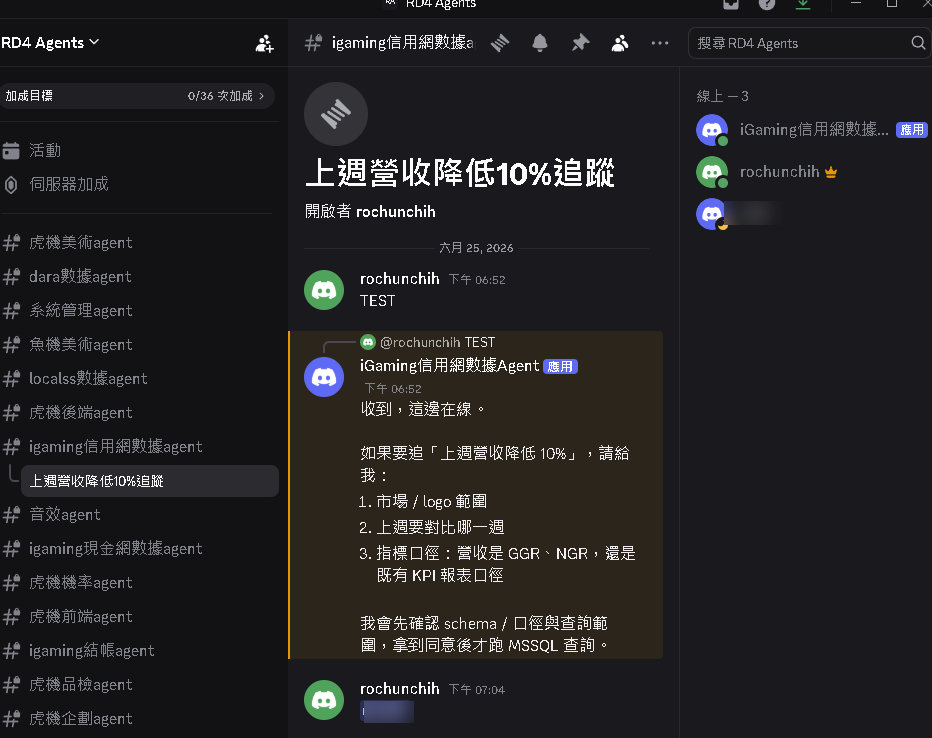
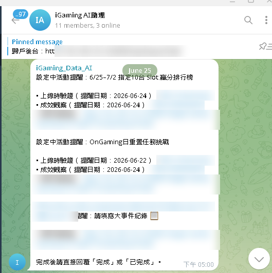
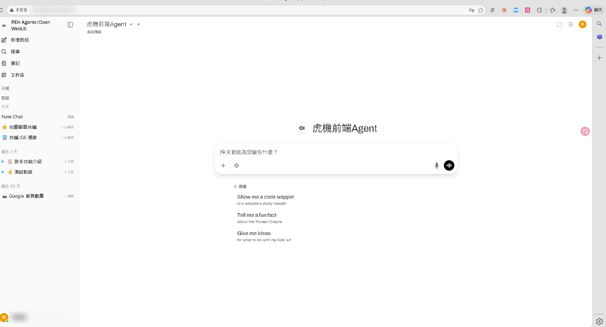
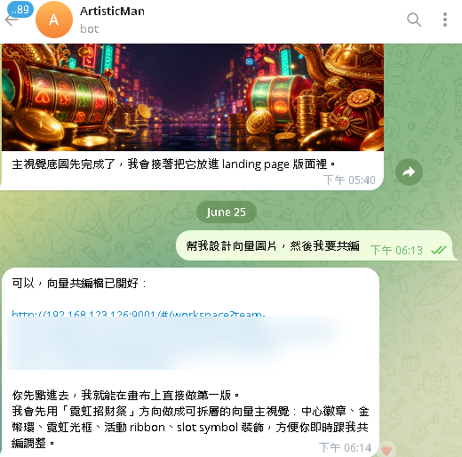
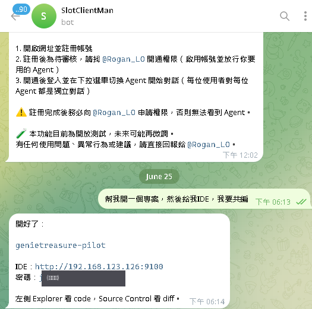
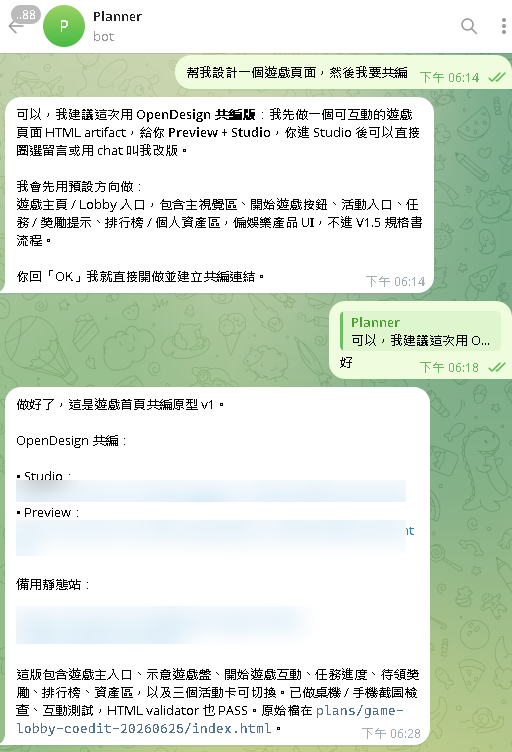
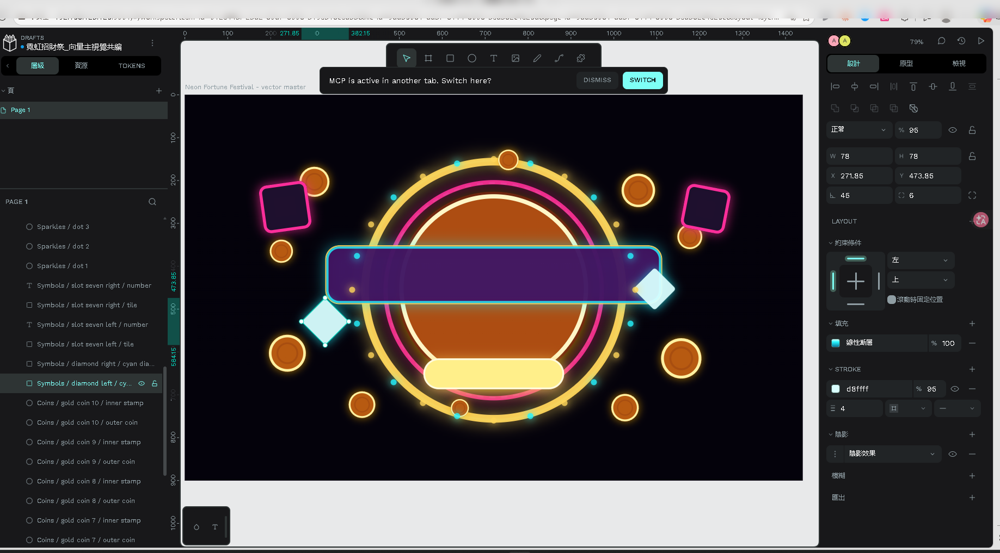
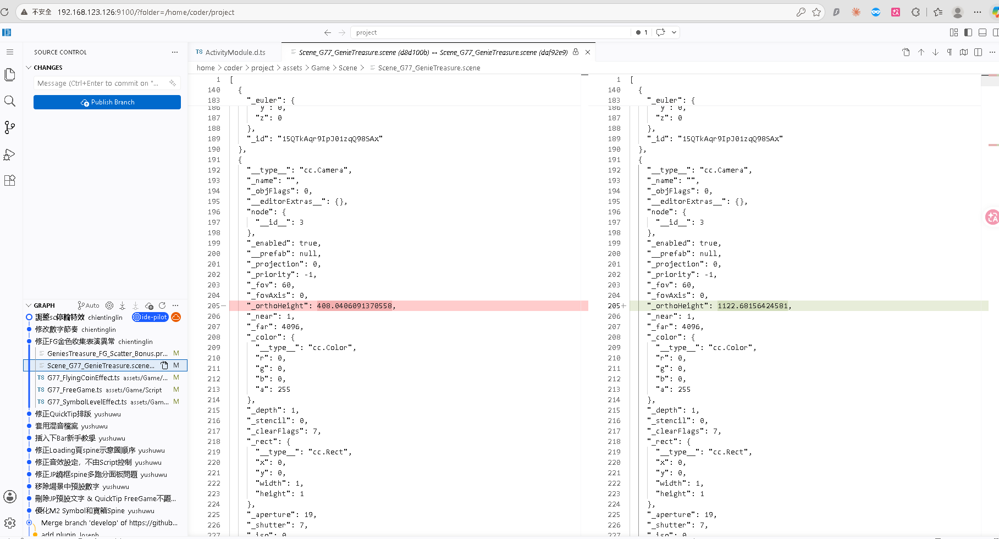
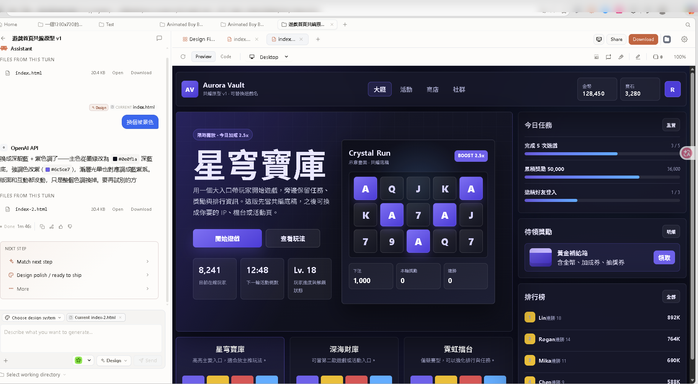

主題：試開發「福星高照」續作
6 個職能 Agent 實戰跑完一輪製程 — 企劃→美術→音效→Client→Server→機率
核心策略：AI 跑流程、人工審核把關
本次以「試開發福星高照續作、沿用既有 Code／素材」為場景，專注驗證 AI 製程能不能解掉這三個長年痛點：
Demo 是成果，儀表板是證據：開發福星高照的 6 個 Agent 真的各自被呼叫、有 Token 消耗、有日誌可追溯。它們與捕魚機／iGaming 等其他產線 Agent 同掛在一套共用治理平台——正印證框架一次建好、多產品共用。
6 職能各自的能力與實際產出，由各職能負責人提供連結 —— 各職能實測：AI 在多個環節已縮短開發時間（Before/After 見各連結）。目前各環節仍需人工串接與審核、尚非全程自動化；「全製程化」是我們的下一步目標。
Gateway「大腦」負責編排與服務；吃重或需特定環境的執行，外派到「執行節點」（機率＝獨立 Windows 機、美術＝同機的隔離角色）—— 算力隔離、平行不卡主腦、可水平擴充。
同仁不必換工具 —— Telegram、Discord、自架 Open WebUI 都能用自然語言找對應 Agent，且不同通道各有擅長場景。



主腦要想清楚＋調對工具（一個任務常串十幾次工具）。選型不押「單一跑分第一」（各家排行榜互有勝負），而看兩個務實條件：能不能當 OpenClaw 後端、適不適合 agentic 任務：
每個職能 Agent 背後，是一整套結構化、可維護、持續演進的工程結構（harness）—— 規範檔、協議文件、技能模組、知識庫，不是一句 prompt。這是「Agent 工程」，也是別人複製不來的深度。
記憶不是「只存不刪」的倉庫 —— 它像人腦：常用的留強、不用的淡出、相似的合併、跨日接得上。這套生命週期讓記憶庫越用越精、不會膨脹成垃圾場。
把模糊需求整理成可交付企劃 —— 規格書、競品拆解、需求定義、Excel 轉檔。
Slot 美術全鏈 —— 生圖／修圖、Spine 2D 動畫、3D、Cocos 匯入驗證、競品 QC。
遊戲音效／配樂／人聲 AI 製作 —— 規格表批次生成 → 命名 → 轉檔 → 入 Cocos。
Cocos Creator／TypeScript —— 共用模組擴充新 slot、整合美術／Spine／音效／多國語言。
Python —— Spin 邏輯、機率整合、Protocol 設計、單元測試。
機率／數學實驗室 —— PAR sheet、RTP／命中率／波動度、Monte Carlo 模擬驗證。
不是職能產品 Agent，而是管理整個平台的治理 Agent —— 唯一服務對象是平台機主，握有最高權限。
本平台內部部署、沒有對外公開服務；在多人使用下，我們特別防護的兩個面是 —— ① 使用者排的自動排程任務被注入或冒充（之後會自動執行）、② 惡意內容被寫進長期記憶持續影響。除了基本權限分級，我們對這兩面做縱深防護：
不是靠人盯著 —— 設定即保證的高可用：自動偵測、自動切換、自動重啟，問題即時發現、不影響使用者。
已自架、可用的「與 Agent 共編」能力：員工自然語言交辦，Agent 做到一段給連結，點開即時看／接手共編（設計 Penpot・Open Design，程式 VS Code）。本次福星高照 6 職能尚未實際採用，是為日後專案複雜度提高、共編需求變大時預先備好的基礎建設。






現在人人都能裝 Claude Code／Cursor。差別不在「誰的 Agent 聰明」，而是定位不同 —— 個人 Agent 讓「一個人」做得更快、把機敏資料留在本機；我們的框架放大的是「整個組織」—— 越做越快、知識留存、集中治理。不是取代，是各守其位。
知識收集 → 基礎建設 → 實戰開發，三階段如期跑通；下為實際時程，規劃期提前達成。
不誇大、誠實揭露 —— 這套框架現階段的限制，以及我們怎麼控管：